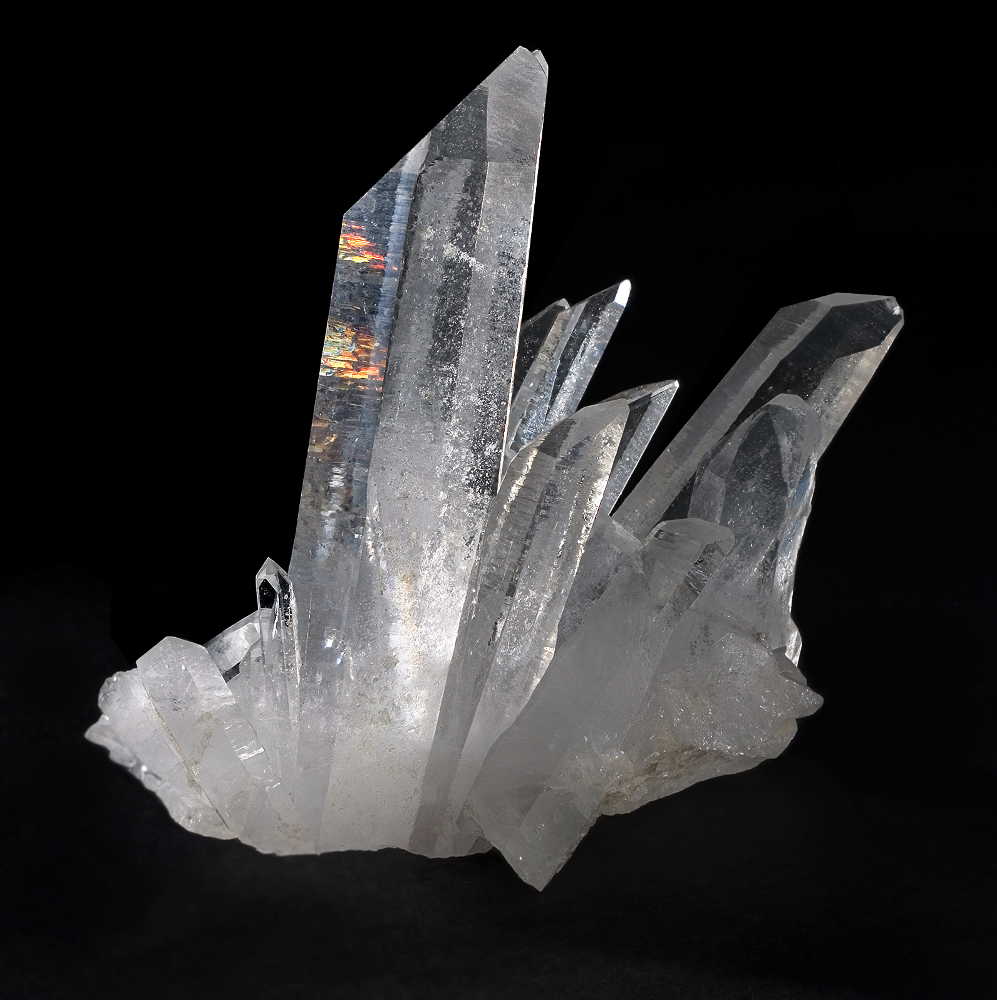
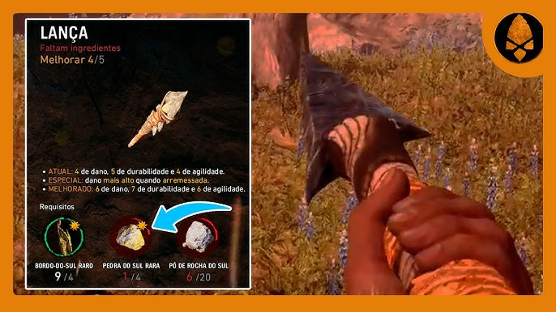

A Obra
Nome: Far Cry Primal
Criador: Ubisoft Montreal
Ano: 2016
Plataformas: PC, PlayStation 4, Xbox One
Gênero: Ação e Aventura
Sinopse
Far Cry Primal é um jogo de ação e aventura em mundo aberto desenvolvido pela Ubisoft e lançado em 2016. Ambientado no período Mesolítico (cerca de 10.000 a.C.) no vale fictício de Oros, o jogo rompe com a tradição da franquia ao eliminar armas de fogo e veículos modernos. O jogador assume o controle de Takkar, um caçador da tribo Wenja que deve sobreviver em um ambiente hostil onde os humanos deixam de ser predadores para se tornarem presas. A narrativa e o progresso focam na coleta de recursos, na fabricação de armas primitivas, na unificação de sua tribo e no domínio da vida selvagem através da mecânica de domar feras para enfrentar facções rivais pelo controle do território.
Por que escolhi essa obra?
Eu gosto bastante da franquia Far Cry e principalmente o Primal por ser um dos mais diferentes entre os outros, ainda mais que ele apresenta muitos elementos químicos que o jogo usa durante a criação de itens.
Identificação
| Nome | Quartzo / Dióxido de Silício |
|---|---|
| Fórmula química | SiO₂ |
| Aparência | Cristal transparente a branco leitoso |
| Dureza (Mohs) | 7 de 10 |
| Ponto de fusão | 1.713 °C |
| Estado físico | Sólido cristalino |

Classificação Química
SiO₂
Justificativa
Justificativa
O quartzo (SiO₂) é um óxido porque é um composto binário (formado por dois elementos) em que o oxigênio é o elemento mais eletronegativo. Como o silício (Si) é um semimetal que se liga ao oxigênio, o SiO₂ apresenta comportamento de óxido ácido (óxido de não metal).
As 4 classes inorgânicas
| Classe | Exemplo | Característica |
|---|---|---|
| Quartzo → Óxido | SiO₂ | 2 elementos, um é oxigênio |
| Ácido | HCl | Libera H⁺ em água |
| Base | NaOH | Libera OH⁻ em água |
| Sal | NaCl | Reação ácido + base |
Aparição em Far Cry Primal
Onde aparece
O quartzo (que no jogo é chamado de "Pedra do Sul Rara") é encontrado na metade sul do mapa de Oros, território da tribo Izila.
Contexto histórico e uso
O jogo se passa em 10.000 a.C. O quartzo foi retratado como um recurso descoberto e utilizado na fabricação e aprimoramento de ferramentas e armas de caça, como pontas de lanças e bordões.

Gameplay: Localização e Coleta do Quartzo (Pedra do Sul Rara)
Análise Científica
Função na narrativa
O quartzo é usado principalmente pra criação ou aprimoramento de ferramentas, mas também pode ser usado para melhorar os recursos de sua tribo.
Fundamentação científica
Na vida real os humanos da Idade da Pedra realmente usaram o quartzo por ser extremamente afiado e útil para a caça, porém pelo sílex ser mais fácil de moldar, quartzo não era o preferido deles.
A representação é...
PARCIALMENTE CORRETA
JUSTIFICATIVA:
O uso do quartzo SiO₂ é real devido à sua alta dureza (grau 7 na escala de Mohs) e à sua fratura concoidal, que quebra o mineral gerando lâminas curvas com bordas extremamente afiadas. Porém, a classificação é parcialmente correta porque na realidade o cristal de quartzo puro é altamente instável e imprevisível de lascar. Devido a essa limitação, os humanos da Idade da Pedra preferiam o sílex (outra variedade de SiO₂), que responde de forma muito mais dócil, controlada e durável.
Aplicações Reais
Como é obtido
O quartzo é extraído na maioria das vezes por meio de mineração a céu aberto, onde são usadas escavadeiras e pequenas explosões para quebrar a rocha, mas os cristais mais puros e valiosos são retirados manualmente com picaretas para não quebrar. No mundo todo, a China e os Estados Unidos são os que mais dominam a produção industrial e o refino. O Brasil também é um gigante nessa área, tendo a maior parte das reservas mundiais de cristal de quartzo de alta pureza. Por aqui, a maior extração fica no estado do Pará, mas Minas Gerais e Santa Catarina também produzem muito, além do Rio Grande do Sul, que é famoso pelas ametistas (que são um tipo de quartzo roxo).
Usos industriais
O quartzo é super importante para a tecnologia e indústria hoje em dia. Na fabricação de vidro, a areia de quartzo pura é derretida para fazer desde copos até janelas. Na eletrônica, ele é essencial para criar o silício usado em chips de computador e celulares, além de ser usado em fibra óptica para transmitir internet rápida por cabos de vidro super puros. Ele também serve para fazer os famosos relógios de quartzo, porque esse mineral tem uma propriedade física que gera pulsos elétricos quando sofre pressão, o que ajuda a marcar o tempo sem atrasar.
Riscos à saúde e ao meio ambiente
A mineração de quartzo traz sérios problemas se não for feita com muito cuidado. Na parte da saúde, o maior perigo é a silicose, uma doença pulmonar crônica, incurável e progressiva. Ela acontece porque, ao triturar ou cortar o quartzo, libera-se uma poeira invisível cheia de micropartículas de sílica livre cristalina. Quando o trabalhador respira essa poeira sem máscara de proteção adequada, as partículas grudam nos pulmões e causam cicatrizes (fibrose), destruindo a capacidade de respirar ao longo do tempo. Já em relação aos impactos da mineração no meio ambiente, a extração gera muita poeira que polui o ar da região, causa poluição e assoreamento de rios próximos por causa dos rejeitos de rocha e destrói a vegetação nativa e o relevo local com as escavações abertas.
↑ Voltar ao topoProva Online
Responda as 3 questões e clique em Enviar para ver sua nota.
Questão 1 de 3
Qual é a fórmula química do quartzo?
Questão 2 de 3
O quartzo é classificado quimicamente como:
Questão 3 de 3
Qual é a dureza do quartzo na Escala de Mohs?
Referências
- ATKINS, P.; JONES, L. Princípios de Química: Questionando a vida moderna e o meio ambiente. 5. ed. Porto Alegre: Bookman, 2012.
- UBISOFT. Far Cry Primal. Montreal: Ubisoft, 2016. Disponível em: ubisoft.com
- NIST. Silicon Dioxide. National Institute of Standards and Technology, 2023. Disponível em: nist.gov.
- BRITANNICA, The Editors of Encyclopaedia. Quartz. Encyclopedia Britannica, 2024. Disponível em: britannica.com.
- ANM. Sumário Mineral Brasileiro. Agência Nacional de Mineração (ANM), Governo do Brasil. Disponível em: www.gov.br.
- USGS. Mineral Commodity Summaries: Silica. United States Geological Survey (USGS), 2024. Disponível em: usgs.gov.